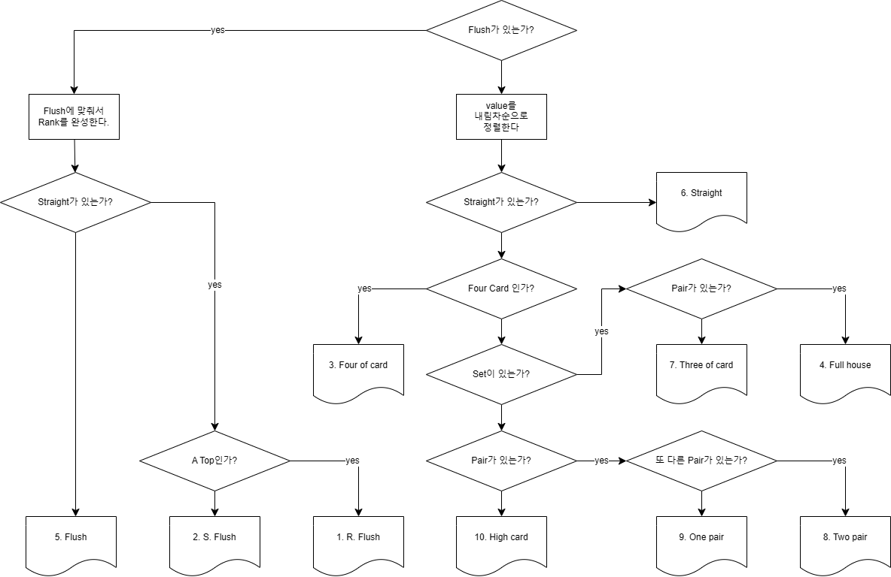
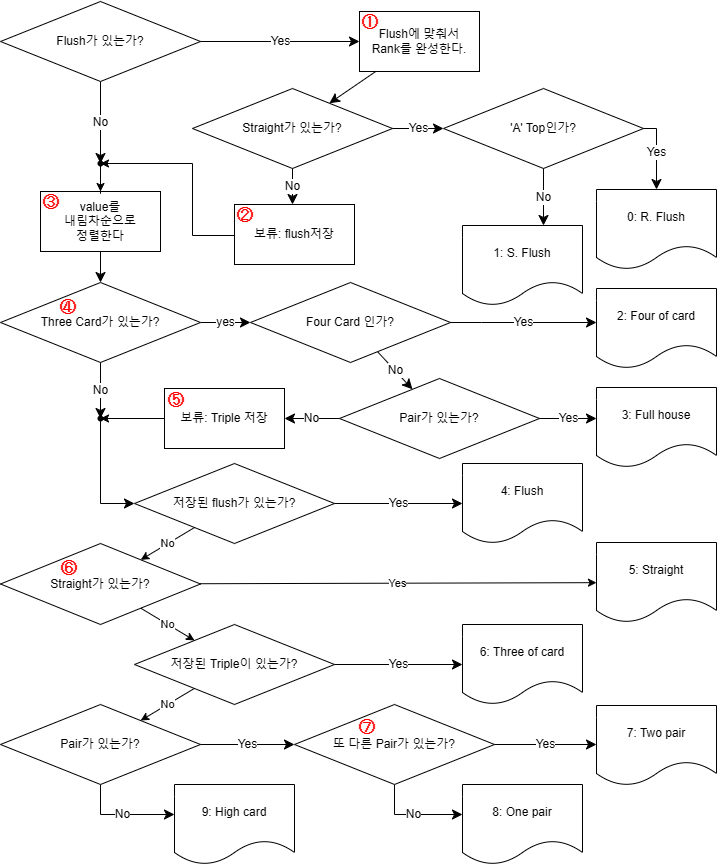

텍사스 홀덤
용어
| 분류 | 용어 | 국문 | 설명 |
|---|---|---|---|
| Player | Dealer | 카드를 돌리는 사람 | |
| Active player | 생존자 | 살아있는(=fold하지 않은) player | |
| Stage |
Pre-flop
= Before-flop |
flop이전 단계
i.e. pre-flop raise, pre-flop all-in |
|
| Flop | 3장의 community card를 공개하는 단계 | ||
| Turn | 돌아갈거라면.. | 4번째 community card를 공개하는 단계 | |
| River | 강을 건넜소 | 5번째(마지막) community card를 공개하는 단계 | |
| Showdown | 모든 Active player들이 hand를 공개하여 승부를 보는 단계(또는 행위) | ||
| Game | (Dealer) Button |
베팅순서를 알리기 위한 표식(물건) 또는 위치한 포지션(SB직전의 포지션)
한판이 지날때마다 시계방향으로 한칸씩 이동 flop 이후 가장 마지막으로 행동할수 있는 자리 |
|
| Blind | 테이블에 참가하는 기본 비용 | ||
| Big Blind(BB) | (Dealer) Button의 왼쪽 2번째 플레이어, 시작 전에 Blind만큼 지불 | ||
| Small Blind(SB) | (Dealer) Button의 왼쪽에 위치한 플레이어. 보통 BB의 절반 | ||
|
Community card
= Board |
모든 플레이어가 공유하는 5장의 카드 | ||
| Burn card | flop, turn, river 오픈 하기 전에 버리는 카드 | ||
| Exposed | 실수나 고의로 한 명 이상에게 노출된 카드는 딜러가 익스포즈드 선언을 하고 모두에게 공개한다 | ||
| Action | Action | 행위(check, call, bet, raise, fold) 또는 행동을 수행하는 것 | |
| Check | 현재 베팅금액에 추가하지 않고 턴을 넘기는 것 | ||
| Call | 현재 베팅금액과 동일한 금액을 내는 것 | ||
| Bet | 가장 먼저 팟에 돈을 내는 것 | ||
| Raise | 앞사람의 bet보다 더 많이 돈을 거는 행위(bet의 2배 이상) | ||
| Fold | 게임을 포기하는 일 | ||
| Limp-in | (프리플랍 콜) | pre-flop에서 BB만큼 콜하고 게임에 참가하는 행위 | |
| Lay down | 상대의 카드를 인정하고 fold하는 것(중계) | ||
| Bet | Post | 패가 나누어지기 전에 blind를 내는 행위 | |
| Crying call | 울며겨자먹기식 call | ||
| Cold call | reraise되지 않는 베팅이나 raise에 처음 call하는 것 | ||
| Snap call | 상대방의 bet을 빠르게 call하는 행위 | ||
| All in | 모든 칩을 거는 행위 | ||
| Reraise | 누군가의 raise에, 한 번 더 raise를 하는 것. 횟수 제한은 대회마다 정함 | ||
| 3-bet |
1-bet(open): pre-flop에서 이루어지는 첫 번째 베팅
2-bet: 첫 raise 3-bet: 두번째 raise |
||
| Check raise | 본인의 check 이후, 상대의 raise에 raise 하는 것. 금지 또는 횟수 제한은 대회마다 정함 | ||
| Call raise | 본인의 call 이후, 상대의 raise에 raise를 하는 것. 금지 또는 횟수 제한은 대회마다 정함 | ||
|
Play
Style |
Bluff | 블러핑, 뻥카 | 가지고 있는 것보다 좋은 hand를 가진 것처럼 속이는 행위 |
| Semi-bluff | 상대를 fold시킬 목적과 메이드의 목적을 동시에 노리는 행위 | ||
| Slow play | 강한 hand를 갖고 있음에도 약한 것처럼 위장하는 플레이 | ||
| Tell | 상대의 카드가 강한지 약한지 알려주는 단서가 되는 행동이나 제스처(베팅액수, 속도) | ||
| Muck | 돈내고 봐 | 자신의 카드를 상대에게 보여주지 않고 덮는 것 | |
| Blind action | community card나 핸드를 보지 않고 취하는 액션 | ||
| Angle | 규정위반은 아니지만 부정한 플레이 | ||
|
Player
Style |
Aggressive | Raise 위주로 플레이 하는 공격적인 성향 또는 플레이어 | |
| Shark | 공격적이고 성적이 좋은 선수 | ||
| Tight | <-> Loose | 많은 게임에 참가하지 않고, 어느 정도 좋은 카드가 있을 때 참가하는 성향 | |
| Loose | <-> Tight | 많은 팟에 참가하면서 다양한 핸드로 폭넓게 플레이하는 성향 | |
| Grinding | 장시간동안 적은 리스크로 수익을 늘려가는 플레이스타일 또는 플레이어 | ||
| Passive | 수동적인 성향 | ||
| Calling station | 다른 액션 없이 콜만하며 따라오는 수동적인 플레이어 | ||
| Fish | 호구 | ||
| Tilt | 자제력을 일고 무모하게 플레이어 하는 것 | ||
| Position | Position | 베팅의 위치(순서) | |
| Early position | 빠른 베팅 순서 [9명중 1, 2, 3] | ||
| Middle position | 중간 베팅 순서 [9명중 4, 5, 6] | ||
| Late position | 마지막 베팅 순서 [9명중 7, 8, 9] | ||
| Under the gun | BB바로 옆자리로 가장 먼저(1번) 베팅하는 자리 | ||
| High Jack | 9명 중 6번째 플레이어 | ||
| Cut off | 딜러버튼 바로 직전 자리(마지막, 끝번) | ||
| Steal | pre-flop에서 bat position을 이용하여 blind나 ente를 챙기는 행위 | ||
| Straddle | Under-the-gun에서 게임 시작 전에 BB의 2배를 내서 BB Position을 매수 하는 것 | ||
| Hand | Hand | 1.플레이어, 2. 플레이어가 들고있는 2장의 카드, 3. 한 판 | |
| Hole cards | 플레이어가 들고있는 2장의 카드 | ||
| Hand history | 매판의 경기 기록 | ||
| 같은 숫자 hand (i.e. 22 = 2 pocket, 33 = 3 pocket, 44,55,66..) | |||
| Suited | <-> off-suited | 같은 무늬 hand | |
| Off-suited | <-> suited | 다른 무늬 hand | |
| Connector | <-> gapper | 연속되는 hand (i.e. AK, KQ, QJ...) | |
| Gapper | <-> connector |
연속되지 않은 hand
(i.e. AQ = 1 gapper, AJ = 2 gapper, K9 = 3 gapper, ...) [♡2, ♡4] = suited 1 gapper, [♡2, ♡5] = suited 2 gapper, [♡2, ♠4] = Off-suited 1 gapper) |
|
| Monster hand | 이길 확률이 매우 높은 패 (i. e. Top Two-pair) | ||
| Nut | community card 조합상 나올 수 있는 최고의 패 | ||
| Draw | Draw |
한 두장의 카드로 메이드가 나오는 상황
(i.e. 3 flsuh draw, two pair draw or two pair vision) |
|
| Draw hand | made되기 위한 마지막 한장의 카드 | ||
| Drawing dead | 어떤 카드가 나오더라도 승부가 결정난 상황 | ||
| Open ended straight | 양차, 양방 |
양쪽으로 straight가 나올 수 있는 상황
(i.e. [3, 4, 5, 6], [8, 9, J, K]) |
|
| Gutshot straight | <-> Open ended | 중간 카드가 채워지면 스트레이트가 만들어지는 상황 | |
| Set | Triple이 된 상황 | ||
| Pair | pair가 된 상황 | ||
| Over pair | flop에서 만들수 있는 pair보다 높은 경우 (i.e. flop[4, 5, 6] hand[7-7]) | ||
| Top pair | flop에 깔린 가장 높은 카드와 만들어진 pair | ||
| Bottom pair | flop에 깔린 가장 낮은 카드와 만들어진 pair | ||
| Over Card |
상대방보다 높은 카드
(i.e. 상대방이 [5, 6]이고 내가 [7, 8]이라면 2-over card, [4, 8]이라면 1-over card) |
||
| Kicker | 같은 rank(족보)에서 승부를 결정짓는 카드 | ||
| Outs | 자신의 hand에 도움이 되면서 나올 수 있는 총 카드 갯수 | ||
|
Runner-Runner
Backdoor |
패가 만들어지기 위해 turn과 river에 연속으로 카드가 필요한 드로우 | ||
| Blank | 현재 상황에서 쓸모없어 보이는 카드 | ||
| Pot | Pot | 테이블에 쌓여있는 돈 | |
| Main Pot | <-> side Pot | all-in 플레이어가 있을 경우, all-in을 포함한 총 pot | |
| Side Pot | all-in 플레이어가 있는 경우, all-in을 제외한 pot | ||
|
Chop,
= Board chop = Split, = Split pot |
무승부 | 2명 이상의 플레이어가 pot을 나누어 가져가는 일 | |
| Odds | 확률별 상황별 계산 | ||
| Implied odds | 잠재적 배당. 원하는 카드가 들어왔을 때 수익률 | ||
| Pot odds | 총 팟에 비하여 투자하는 금액 | ||
| Steak |
자신이 가지고 있는 총 칩 액수(기준: BB의 몇 배)
short steak: >50, Half steak: 50, Middle steak: 50~100, Full steak: 100, big(deep) steak: <150 |
||
| Game | Limit game | <-> No limit.. | 정해진 액수에 맞게 베팅이나 레이즈 할 수 있는 게임 |
| No limit game | 레이즈 횟수제한이나 베킹금액 제한 없은 게임 | ||
| Pot limit game | 한번에 걸 수 있는 최대한도를 제한하는 것 | ||
| Cash game | <-> tournament | 필요에 의해 돈을 추가하거나, 중간에 이탈할 수 있는 게임 | |
| Tournament | 우승을 목표로 정액으로 all-in 이탈하는 게임 | ||
| Satellite | tournament 예선전 | ||
| Part in | Buy-in | 게임에 참가하기 위해 지불하는 금액 (보통 1 Buy-in = 100 BB) | |
| Backroll | 포커에 사용할 수 있는 자금(예산), 칩X | ||
| Ante | 엔티 | 게임 시작 전 '모든' 참가자들이 의무적으로 카지노에 내는 금액 (SB. BB가 아님) | |
| Rake |
카지노에서 징수하는 수수료
i.e. Pot rake(Pot크기 x 수수료율), Time rake, Tournament rake(=참가비)... |
||
| Run | Run | 오픈되는 community card 또는 그 흐름 | |
| Rainbow | flop 3장의 무늬가 모두 다를 때 | ||
| Heads up | 둘이 하는 플레이 | ||
| Bad beat | 질 확률이 적은 판에서 불운하게 지는 것 |
규칙
stage
| stage | name | action |
|---|---|---|
| 1 | pre-flop |
두장의 개인 카드를 받습니다.
다른 플레이어에게 공개하지 않습니다. 배팅을 합니다. |
| 2 | flop |
한 장을 burn(버리고)하고,(비공개)
community card를 3장 공개합니다. 배팅을 합니다. |
| 3 | turn |
한 장을 burn하고,(비공개)
네번째 community card를 공개합니다. 배팅을 합니다. |
| 4 | river |
한 장을 burn하고,(비공개)
다섯 번째 community card를 공개합니다. 배팅을 합니다. |
| 5 | showdown | 승자를 가립니다. |
hand ranking
| 순위 | 이름 | 국문 | 확률 | 설명 | 예시 |
|---|---|---|---|---|---|
| 1 | Royal Flush | 로열 플러시 | 0.0032% | 같은 무늬의 A, K, Q, J, 10 * | ♠A ♠K ♠Q ♠J ♠10 |
| 2 | Straight Flush | 스트레이트 플러시 | 0.029% |
같은 무늬의 연속된 다섯 장
* 가장 강한: A, K, Q, J, 10(로열) / 가장 약한 ** : 5, 4, 3, 2, A |
|
| 3 | Four of a Kind | 포카드 | 0.16% | 같은 숫자 네 장 |
♠5
♣5
|
| 4 | Full House | 풀 하우스 | 2.63% | 같은 숫자 세 장과 다른 같은 숫자 두 장 |
♠8
♣8
|
| 5 | Flush | 플러시 | 3.03% |
같은 무늬 다섯 장
제일 높은 카드부터 우열을 가립니다. A, 10, 4, 3, 2 > A, 9, 8, 7, 6 |
♠A ♠J ♠10 ♠5 ♠3 |
| 6 | Straight | 스트레이트, 줄 | 4.55% | 연속된 다섯 장 (무늬 상관없음) |
|
| 7 | Three of a Kind | 트리플 | 4.8% | 같은 숫자 세 장 |
♠4
♣4
|
| 8 | Two Pair | 투 페어 | 23.5% | 두 쌍의 같은 숫자 |
♠J
|
| 9 | One Pair | 원 페어 | 43.8% | 같은 숫자 두 장 |
♣3
|
| 10 | High Card | 하이 카드 | 17.5% | 위의 조합이 없는 경우 |
♣A
♣Q
|
* 무늬의 서열은 없습니다.
** back straight : 일부 한국에서 Straight 2순위(1순위:로열)로 인정되지만, 일반적으로 back straight가 성립하려면 A를 1로 인정해야되기 때문에 가장 낮은 약한 hand가 됩니다.
| 분류 | 약어 | 의미 | 설명 |
|---|---|---|---|
| shape | s | S pades or pikes |
1. 카드 숫자 뒤에 작성합니다(소문자).
- Ac : A Clubs - 10s(Ts) : 10 Spades - 9d : 9 Diamonds 2. hand나 board(cc: community card)를 기록할 때는 [ ] 를 씁니다. - seat 1: [Ad 9s] - Jone: [Qs Qc] (※ Jone은 참가지 이름(또는 ID)입니다.) - FLOP: [7h 8d 5c] (※ 작성 순서: Open 순서 O, 높은 순서 X) - TURN: [7h 8d 5c] [K9](※ 새로 Open된 카드를 따로 묶습니다.) - RIVER: [7h 8d 5c K9] [4d] |
| c | C lubs or C lover | ||
| h | H earts | ||
| d | D iamonds or tiles | ||
| value | A | A ce |
1. hand를 표시할 때, 무늬는 생략합니다.
- [Ak Ac] or [Ak Ad] or [Ad Ah] or ... = AA 2. 2장의 hand 중 높은 순서대로 기록합니다. - AK: Ace, King - KT(K10): King, 10 - 72: 7, 2 |
| K | K ing | ||
| Q | Q ueen | ||
| J | J ack | ||
| T | 10, T en | ||
| 9 | nine card | ||
| suit | s | S uited |
1. 문양이 같은지 다른지를 표시합니다.
- [7h 2h]: 72s - [Kd 8h]: K8o - [Qc 5c]: Q5c 2. 숫자가 같을 때는 생략합니다(항상 off-suited이므로) - [7h 7d]: 77 (= 7p, 7 pocket) - [5d 5c]: 55 (= 5p, 5 pocket) |
| o | O ff-suited |
| 조합 | 별명 | 유래 |
|---|---|---|
| AA | American Airlines | AA의 약자에서 유래 |
| Bullets | 에이스 모양이 총알처럼 생겨서 | |
| Pocket Rockets | 에이스 두 장이 로켓을 연상시킴 | |
| KK | King Kong | KK 약자에서 유래 |
| Cowboys | King 카드의 왕 이미지에서 유래 | |
| Ladies | Queen 카드의 여왕 이미지에서 유래 | |
| Cowgirls | ||
| JJ |
Hooks,
Fishhooks |
J 모양이 낚싯바늘처럼 보여서 |
| 1010 | Dimes | 10센트 동전(다임)에서 유래 |
| 99 | Popeyes | 만화 캐릭터 포파이(Popeye)의 두꺼운 팔 모양과 연관 |
| German Virgin | 독일어에서 99가 "Nein Nein"으로, "아니야 아니야"라는 의미 | |
| 88 | Snowmen | 8 모양이 눈사람을 닮아서 |
| 77 | Hockey Sticks | 숫자 7이 하키 스틱 모양처럼 보여서 |
| AK | Big Slick |
강한 핸드라서(suit여부와 상관 없음)
이걸로 지면 집에 가라.."집가 핸드" |
| Walking Back to Houston | ||
| 72 | The Hammer | off-suited에서, 플러쉬, 스트레이트도 불가능하고 high Card도 극도로 낮은 최악의 카드라 역설적인 별명 |
| K9 | Canine | 발음(King-Nine)이 강아지(개)를 뜻하는 영어 단어 "Canine"과 비슷해서 |
| A8 | Dead Man's Hand | 전설적인 총잡이 와일드 빌 히콕이 이 핸드를 들고 살해당했다고 전해짐 |
Hand Rank 판단 알고리즘

hand rank algorithm
"holdem.drawio.png", iseohyun, iseohyun.com, public
python에 적용된 알고리즘

algorithm in python
"holdem2.drawio.png", iseohyun, iseohyun.com, public
- Flush에 맞춰서 Rank를.. : 5개 이상 나온 무늬가 있는가?
back straight가능성도 있기 때문에(예:A-8-7-5-4-3-2) 5개만 보면 안된다. - '보류: flush저장': Four of card와 Full house의 가능성이 있기 때문에..
- 판단보류가 반드시 필요한가? -> 아니오: Straight검출의 No를 Four검출에 붙이고, Flush검출의 No를 straight검출로 이어서 해결 할 수 있다. 다만, loop의 depth를 고려해서 잘랐을 뿐이다. - value를 내림차순으로 정리: 1) 연속된 카드 검출 2) 높은 페어 우선검출의 이점이 있다.
- Three Card가 있는가..: pair card를 먼저 검출하지 않는 이유는 단순 검출부터 (Q-Q-9-9-3-3-3)과 같은 다양한 경우의 수를 상정하면 분기문이 많이 필요할 것으로 판단했기 때문
- '보류: Triple저장': flush, straight 가능성이 있다.
판단보류가 반드시 필요한가? -> 예: triple 검출을 3번 수행(four, full, triple)하는 것보다, 1회 수행 후, 분기 1회를 추가하는 것이 이득이다. - Straight가 있는가(2): off-suit에서 flush가능성도 검사해야 한다.
- 또 다른 Pair가 있는가?: 내림차순으로 정렬되었기 때문에, Pair가 몇 개가 나오든 나온 순서대로 2개이면 2-pair, 1개면 1-pair, 없으면 high card를 적용하면 된다.
- 랭크가 10개므로 최소한 9개의 분기문(if)가 반드시 등장해야 한다.
현 알고리즘은 총 11개 분기문(10 outputs + 2 holds)이므로 나쁘지 않을 것으로 보여진다.
코드
@iseohyun.com (cc = public) full code는 여기에서 확인 가능합니다.
values = "AKQJT98765432"
shapes = "schd"
cards = sorted(cards, key=lambda x: (values.index(x[0]), shapes.index(x[1])))
deck = is_flush(cards)
if deck and len(deck) > 0:
straight = is_straight(deck)
if straight and len(straight) > 0:
if straight == "AKQJT":
return [0, {straight}] # 0. "R. Flush"
return [1, {straight}] # 1. "S. Flush"
# 보류: four-card와 Full house를 검사 한 후에 없으면 출력한다.
flush = [4, {deck[0:5]}] # 4. "Flush"
deck = "".join(card[0] for card in cards)
for i in range(len(deck) - 2):
if deck[i] == deck[i + 1] == deck[i + 2]: # 연속된 3개 문자가 같으면
if i + 3 < len(deck) and deck[i] == deck[i + 3]: # 연속된 4개 문자가 같으면
return [2, {deck[i : i + 4]}] # 2. "Four of Card"
else:
for j in range(len(deck) - 1):
if j == i or j == i + 1 or j == i + 2:
continue
elif deck[j] == deck[j + 1]:
return [3, deck[i] * 3 + deck[j] * 2] # 3. "Full House"
triple = deck[i : i + 3]
break
if flush != "":
return flush # 4
straight = is_straight(deck)
if straight and len(straight) > 0:
return [5, straight] # 5. "Straight"
if triple != "":
return [6, triple + deck.replace(triple, "")[0:2]] # 6. "Triple"
for i in range(len(deck) - 1):
if deck[i] == deck[i + 1]:
pair = deck[i] * 2
deck = deck.replace(deck[i], "")
for j in range(len(deck) - 1):
if deck[j] == deck[j + 1]:
pair += deck[j] * 2
deck = deck.replace(deck[j], "")
return [7, pair + deck[0]] # 7. "Two pair"
return [8, pair + deck[0:3]] # 8. "One pair"
return [9, deck[0:5]] # 9. "High card"